SIDHAYA is the 2026 Bar Operations Committee of Saint Paul School of Professional Studies, committed to supporting and uplifting Paulinian bar candidates through dedication, collaboration, and unwavering service—building a strong community of preparation, encouragement, and solidarity for future lawyers.
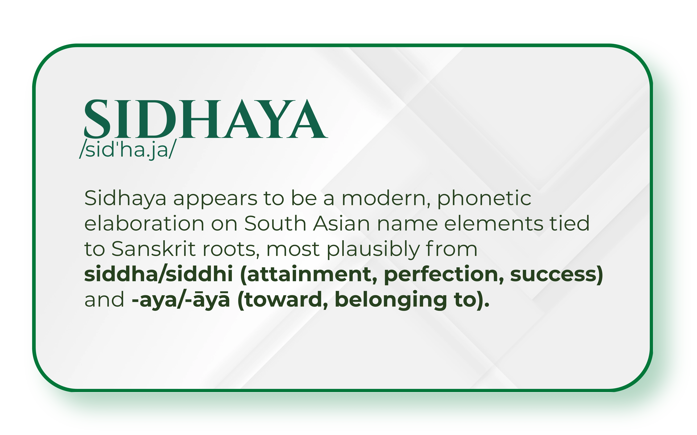
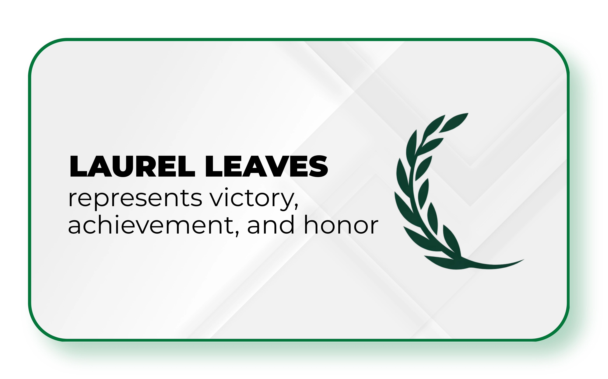
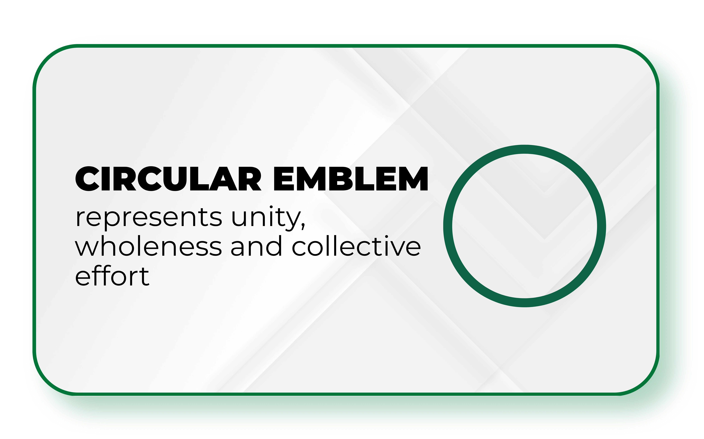
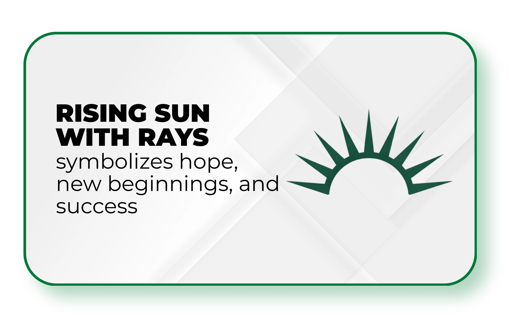
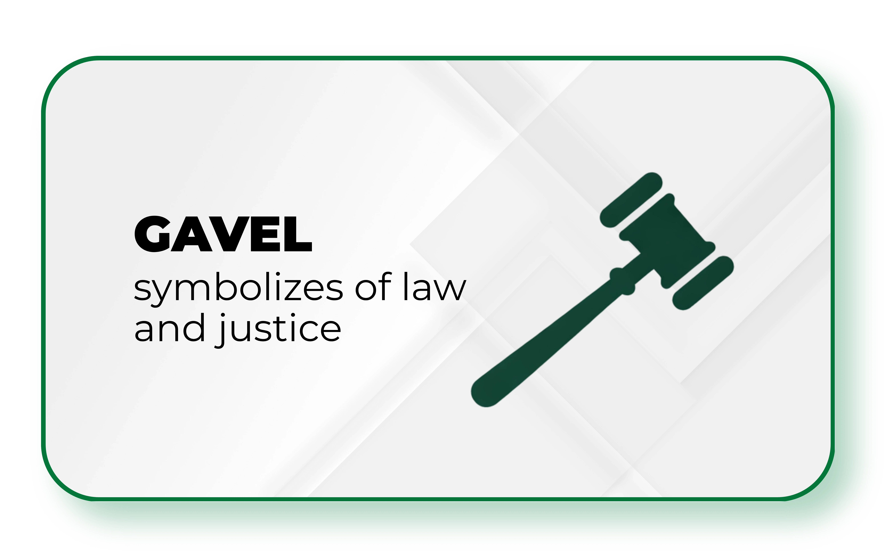
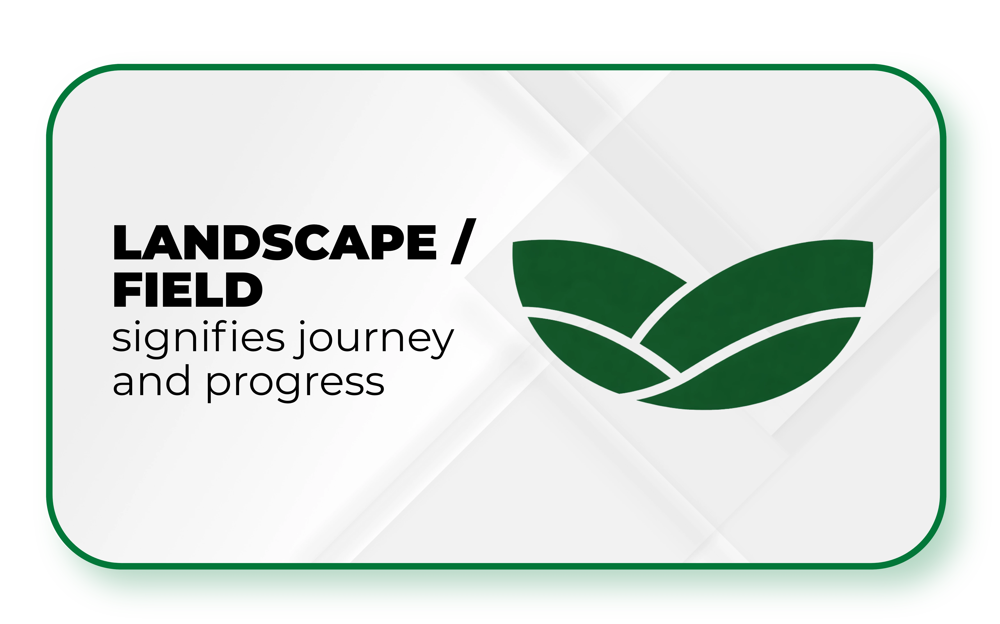
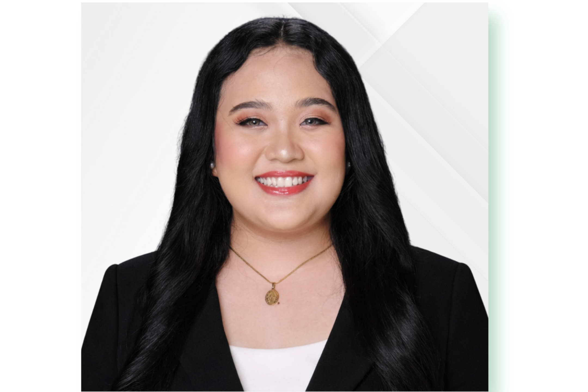
SARAH ANTONETTE PINO
Secretariat Committee
Sarah Antonette Pino, our Secretariat Committee Head, is the baby girl of the group—and the only freshie among us. Outgoing, bubbly, and full of energy, she easily blends in and brings a cheerful vibe wherever she goes. But don't let her youth fool you—she's organized, attentive to details, and quick to keep things on track, making her the perfect fit for the Secretariat role. Whether it's managing documents, coordinating tasks, or keeping the team on schedule, Sarah handles it all with efficiency and a bright, positive energy that lifts everyone around her.
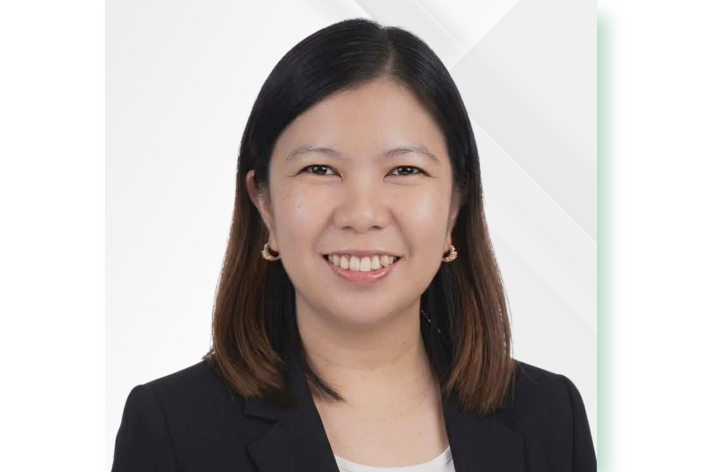
FERNIE VIEN ALCOBER
Finance Committee Head
This is Fernie Vien Alcober, our Finance Committee Head. She's a Certified Public Accountant who keeps everything in check behind the scenes. She's a smiley, warm presence you'll often see around, but when it comes to work, she means business. With her strong background in accounting and her attention to detail, she makes sure everything is handled properly and responsibly. With Fernie, you get the best of both worlds – light and easy to be around, but solid and dependable where it matters most.
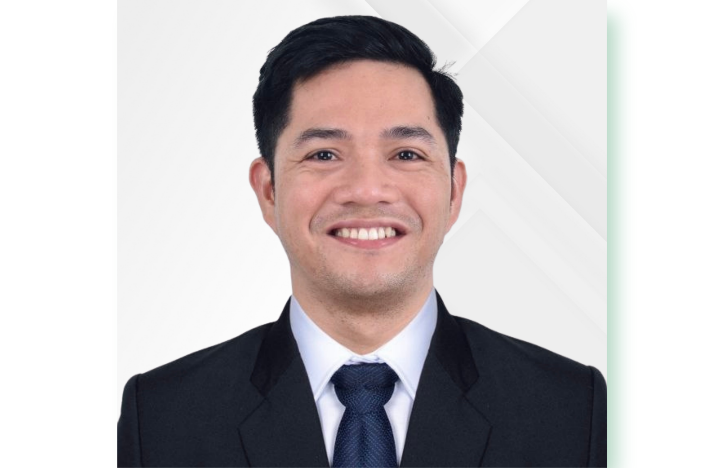
ELEZARDO SALA
Audit Committee
Keeping everything in check is Elezardo Sala, our team's auditor. Another CPA in the team with a knack for handling finances, he's the kind of person who likes things neat, clear, and in order. He takes his time going through the records, making sure everything is organized, balanced, and right where it should be. Add in his charm, and you've got someone who's not only reliable with the numbers but also easy and enjoyable to work with. With El around, you know the numbers are in good hands.
MA. TRINA CELINE CUGTAS
Academics Committee Head
Leading the Academics Committee is Ma. Trina Celine Cugtas, Trice, as fondly called. She's someone who quietly excels and lets her work speak for itself. She has a strong eye for research and a talent for finding the right resources, making her someone you can always rely on when it comes to scholarly work. Even though she does really well in class, she stays grounded and low-key, always willing to share what she's learned with everyone. With Trina, what she learns doesn't just stay with her – it's something she brings back to help the whole class and the SPSPS community grow.
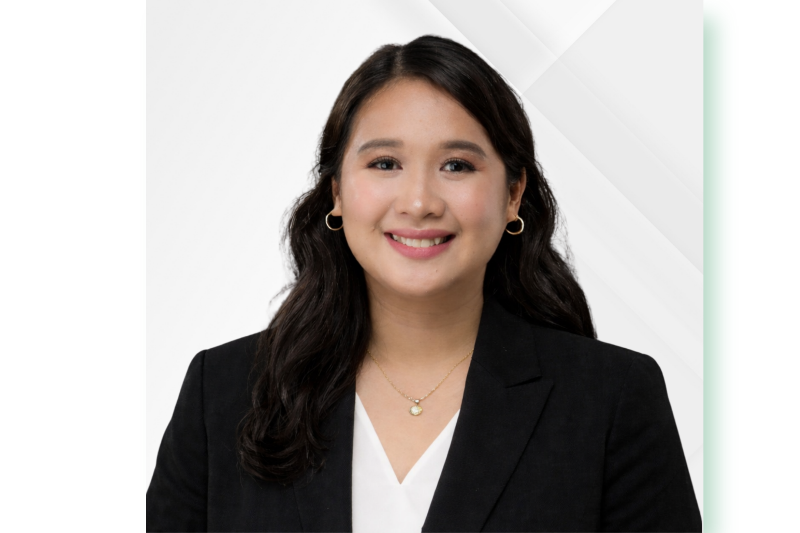
ROSE ANN MAGCURO
Logistics Committee Head
Rose Ann Magcuro, our Logistics Committee Head, is truly the "mom" of the group – the kind who keeps everything together without making it look hard. She brings a quiet strength and steady efficiency shaped by real-life experience, balancing it all as a mom of three. From admin work to coordination and logistics, she handles everything with ease and intention. More than that, she leads with heart. Soft, nurturing, and deeply grounded in her faith, she looks after the team like family – always ready to step in, stand up, and go the extra mile for the people she cares about, including all of BarOps.
JAICA PAULA U. RON
Program Committee Head
Taking charge of the flow and energy of our events is Jaica Paula Ron, our Program Committee Head – the dynamic "girlie" who knows exactly how to command a room. As someone who's right at home on stage, she has an effortless pull that instantly keeps the crowd engaged, entertained, and fully present. With her quick wit and lively charm, she doesn't just host – she creates an atmosphere. Apart from the spotlight, she is also incredibly dependable, the kind of person who shows up prepared and gives her all in everything she does. When something is placed in her hands, you can trust that she'll carry it through with energy, dedication, and heart.
MIKAELA ANGELICA A. RAMIREZ
Public Affairs Committee Head
Meet Mikaela Angelica Ramirez, our Public Affairs Committee lead – outgoing, dynamic, and effortlessly in tune with the digital world. She brings life to our Bar Operations through her natural flair for social media, turning every platform into a space for connection, engagement, and creativity. With a keen eye for trends and a genuine love for what she does, Mikaela makes sure our voice is not only heard, but felt - creating a presence that connects, engages, and leaves a lasting impression on everyone it reaches.
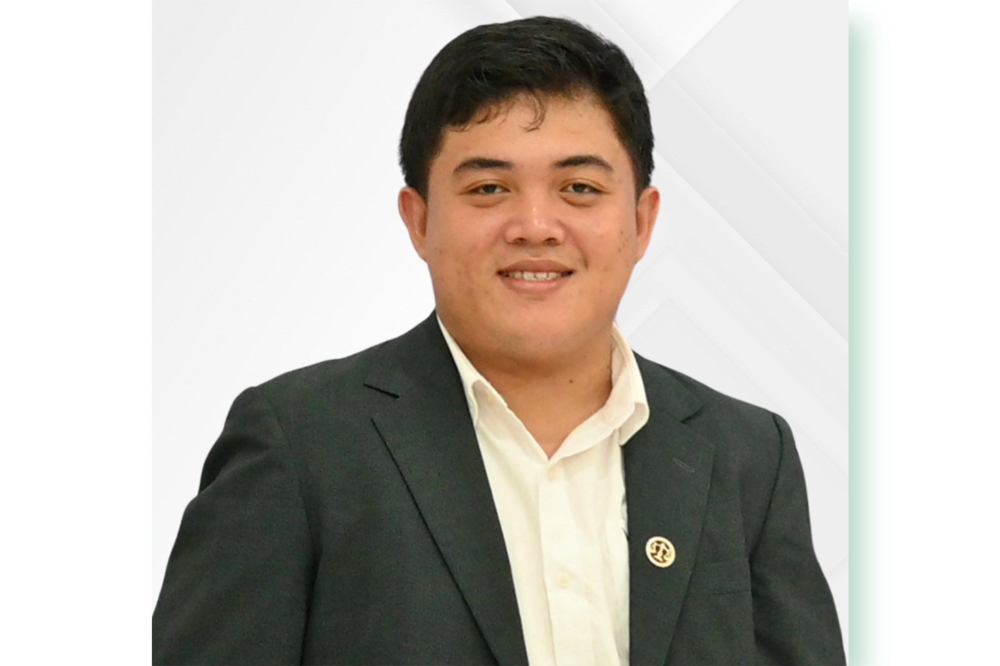
ALJON P. MALOT
Marketing Committee Head
Aljon Malot heads our Marketing Committee with a mix of creativity, focus, and a presence you can't ignore. With a background in broadcasting, his voice is as strong and commanding as his personality, yet he balances it with a soft, approachable side that makes him easy to work with and get along with. Sharp-eyed and detail-oriented, he knows exactly what needs to be done. While he can keep things light and fun, be sure that when it's time to get serious, he stays calm, keeps his focus, and makes sure everything gets done the right way. With him, there is no room for mediocrity.